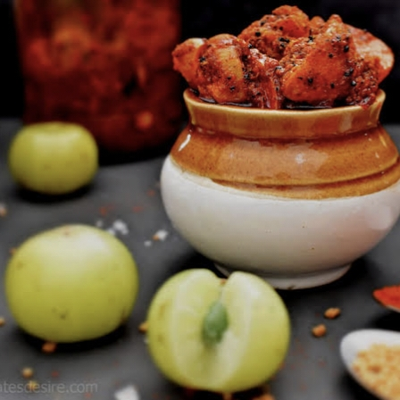

Telugu Ruchulu
తెలుగు రుచులు
AamlaPickle/
ఉసిరిఉరగాయ
Home Page
Click to change the language
తెలుగు కోసం క్లిక్ చేయండి
Ingredients:
500g usiri (Indian gooseberries/amla)
2 tbsp mustard seeds (coarsely ground)
1 tbsp fenugreek seeds (methi, roasted and ground)
2 tbsp red chili powder
1 tbsp turmeric powder
2 tbsp salt (adjust as per taste)
½ cup sesame oil (or mustard oil)
5-6 garlic cloves (optional, chopped)
1 tbsp lemon juice (for extra tanginess)

Instructions:
Steam Amla –
Wash and steam amla for 5-7 minutes until they soften slightly. Once cooled, separate them into segments and remove the seeds.
Prepare Spice Mix –
Dry roast mustard and fenugreek seeds, grind them coarsely, and mix with red chili powder and turmeric.
Mix Amla with Spices –
Add the amla pieces to a bowl, mix with salt and the prepared spice mix.
Temper with Oil
Heat sesame oil, sauté garlic (if using), then pour it over the amla mixture and mix well.
Store & Ferment –
Transfer to a sterilized jar and let it sit for 2-3 days for the flavors to develop.
Tip
కావలసినవిః
500గ్రా ఉసిరి
2 టేబుల్ స్పూన్లు ఆవాలు
1 టేబుల్ స్పూన్ మెంతి గింజలు
2 టేబుల్ స్పూన్లు ఎర్ర మిరప పొడి
1 టేబుల్ స్పూన్ పసుపు పొడి
2 టేబుల్ స్పూన్లు ఉప్పు (రుచి ప్రకారం సర్దుబాటు చేయండి)
½ కప్పు నువ్వుల నూనె
5-6 వెల్లుల్లి రెబ్బలు
1 టేబుల్ స్పూన్ నిమ్మరసం
స్టీమ్ ఉసిరి -
ఉసిరిని కొద్దిగా మెత్తబడే వరకు 5-7 నిమిషాలు కడిగి ఆవిరిలో ఉడికించాలి. చల్లబడిన తర్వాత, వాటిని భాగాలుగా విభజించి, విత్తనాలను తొలగించండి.
మసాలా మిక్స్ను సిద్ధం చేయండి
ఆవాలు మరియు మెంతి గింజలను ఎండబెట్టి, వాటిని ముతకగా రుబ్బుకుని, ఎర్ర మిరపకాయ మరియు పసుపుతో కలపండి
ఉసిరిని సుగంధ ద్రవ్యాలతో కలపండి -
ఒక గిన్నెలో ఉసిరి ముక్కలను వేసి, ఉప్పు మరియు సిద్ధం చేసిన మసాలా మిక్స్తో కలపండి.
నూనెతో టెంపర్
నువ్వుల నూనెను వేడి చేసి, వెల్లుల్లిని వేగించండి (ఉపయోగిస్తే), ఆపై ఉసిరి మిశ్రమం మీద పోసి బాగా కలపాలి.
స్టోర్
స్టెరిలైజ్ చేసిన కూజాకు బదిలీ చేయండి మరియు రుచులు అభివృద్ధి చెందడానికి 2-3 రోజులు కూర్చునివ్వండి
చిట్కా